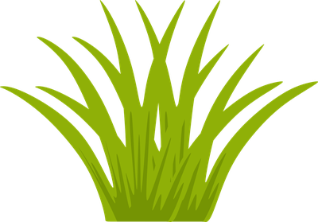
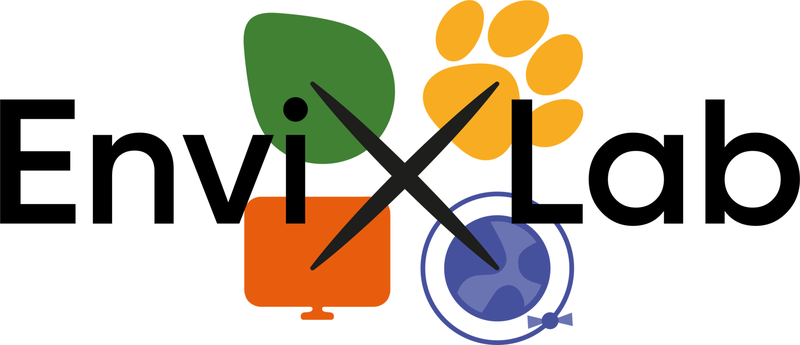
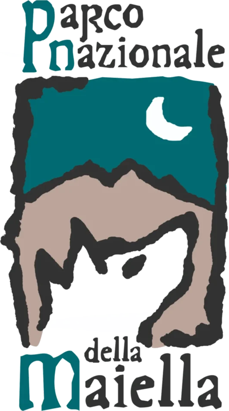

PRESINMED

Saperi ed usi raccontati da 15 protagonisti del territorio
Presinmed · Parco Nazionale della Maiella
Età? Professione o attività principale?
Più della metà delle persone intervistate ha più di 60 anni.
30-40 anni6%
40-50 anni20%
50-60 anni20%
Oltre 60 anni53%
Amministrativo e di controllo47%
Scientifico23%
Turistico-ricettivo17%
Zootecnico11%
Che tipo di relazione hai con la Maiella? Da quanto tempo dura questa relazione?
Dalla nascita con stretto legame intimo45%
Relazione lavorativa40%
Relazione ricreativa15%
Da meno di 10 anni26%
Da 10 a 20 anni6%
Da 20 a 30 anni13%
Da più di 30 anni53%
Come descriveresti una prateria umida da un punto di vista ecologico e culturale?
Un ambiente fragile e soggetto a continui cambiamenti11%
Un ambiente prativo ricco di biodiversità, ascrivibile ad habitat tutelati44%
Un ambiente fondamentale per la cultura pastorale e per l'economia di un tempo38%
Non so5%
È un ambiente naturale? Che ruolo hanno avuto le popolazioni locali nella sua creazione o nel suo mantenimento?
Sì, è naturale e selvaggio23%
No, non è del tutto naturale, ma è dovuta al pascolo42%
Dipende dalla quota28%
Non so4%
Sì, hanno avuto un ruolo nella creazione e nel mantenimento66%
Hanno avuto un ruolo nel solo mantenimento26%
No, non hanno avuto nessun ruolo6%
Esistono usi attuali e/o tradizionali delle praterie umide? Per cosa è stata tradizionalmente utilizzata?
Sì, esistono e non sono cambiati per nulla rispetto al passato13%
Sì, esistono, ma sono in parte cambiati rispetto al passato (è subentrata l'attività turistico-ricreativa: sci e/o escursionismo). In passato era utilizzata per il pascolo, sfalcio, raccolta fieno ed erbe, agricoltura, caccia80%
Oggi c'è la sola attività turistico-ricreativa: sci e/o escursionismo. Non esistono attualmente. In passato era utilizzata per il pascolo, sfalcio, raccolta fieno ed erbe, agricoltura, caccia6%
Il pascolo è stato gestito storicamente da pastori? In che modo è stato storicamente gestito il pascolo di pecore, capre e bovini?
Il pascolo è stato gestito. I pastori praticavano la monticazione e/o la transumanza.57%
Il pascolo di alta quota è stato gestito dai Comuni e dagli enti preposti con concessioni (o bandi) ai pastori; a più bassa quota la gestione era affidata ai pastori e ai privati.33%
Il pascolo è sempre stato gestito, ma non so i dettagli9%
In che modo l'acqua di montagna veniva gestita in passato? La forma di laghi o corsi d'acqua nell'area di studio è naturale? Sono presenti fossi, canali o altre infrastrutture idriche?
In quota l'acqua è sempre stata poca: per questo si facevano fontanili e canali.
L'acqua in quota è sempre stata una risorsa scarsa, quindi veniva gestita con opere di captazione per la realizzazione di fontanili e canali.61%
La presenza di laghi naturali è limitata al periodo primaverile, dovuto allo scioglimento delle nevi; spesso queste acque e anche acque di stillicidio venivano canalizzate per avere punti di abbeveraggio28%
Non so9%
In che modo il suolo è stato gestito (pulizia, sfalcio o disboscamento, fertilizzazione)?
Il suolo è stato gestito con azioni "naturali" di disboscamento (anche tramite l'azione del fuoco), sfalcio, fertilizzazione naturale60%
Il suolo è stato gestito solo in parte40%
In che modo sono state utilizzate le piante dei pascoli?
Sono state utilizzate per l'alimentazione umana e animale e a scopo officinale e liquoristico73%
Sono state utilizzate solo per l'alimentazione animale20%
Non so6%
Che impatto hanno avuto gli usi tradizionali (allevamento, zootecnia) sui pascoli d'alta montagna?
L'ambiente è stato plasmato da questi usi43%
L'ambiente è stato parzialmente modificato da questi usi43%
Non hanno avuto impatto6%
Non so6%
Quale capacità di carico ritieni abbia la prateria umida rispetto alle pressioni esercitate, ad esempio, dal bestiame o dal turismo montano?
Un'alta capacità di carico, visto che il bestiame al pascolo non è troppo numeroso ed il turismo non è massivo35%
Una bassa capacità di carico, tollerando poco il pascolo del bestiame e la presenza turistica5%
Dipende dalla prateria in esame47%
Non so11%
Che tipo di interazione esiste tra erbivori selvatici e domestici?
Esiste sia indirettamente che direttamente (antibiotico resistenza, competizione alimentare)26%
Non esiste40%
Esiste limitatamente solo in alcune zone26%
Non so6%
Quali tipologie di bestiame erano presenti in passato? Ed oggi?
Le stesse sia ieri che oggi: ovini, caprini e bovini a seconda delle zone e delle praterie53%
Oggi non ci sono più animali al pascolo13%
Le stesse sia ieri che oggi, ma con un aumento di bovini ed equini33%
Quali cambiamenti storici si sono verificati nel tipo di bestiame, nel numero di capi o nelle modalità di gestione? Conosci fonti di dati o statistiche che possano essere utili?
Sono cambiate sia le tipologie, che il numero di capi, che la gestione20%
Non sono cambiate le tipologie, né la gestione, ma sono cambiati i numeri53%
Sono cambiate le razze ed i numeri, ma non la gestione13%
Non so13%
Qual è il regime di proprietà delle praterie umide (ad es. pubblica o privata)? Come vengono attualmente gestite, chi può utilizzarle e in che modo?
Sono pubbliche6%
Sono private6%
Dipende dalla quota o da altro80%
Non so6%
Quelle demaniali sono gestite dai Comuni che le affidano tramite asta46%
Non sono gestite6%
Non so46%
Nell'area vengono proposte attività di ecoturismo particolari, come osservazione della fauna, avventura, turismo rurale o geoturismo? Se sì, da chi vengono organizzate?
Sì, da realtà locali per lo più, dai Carabinieri Forestali, da guide locali e non, dal C.A.I.93%
Non so6%
Quali cambiamenti negli usi dei pascoli d'alta montagna hai osservato negli ultimi decenni (ad es. negli ultimi 20-50 anni)? Quali attività si stanno sviluppando attualmente?
Quasi tutti hanno visto diminuire l'uso dei pascoli negli ultimi decenni.
La prateria ha subìto un cambiamento nella composizione floristica e la diminuzione di animali al pascolo favorisce l'inarbustamento della prateria secondaria16%
L'uso delle praterie è diminuito enormemente rispetto al passato, ma è in ogni modo destinato al pascolo e al turismo77%
Non ci sono stati cambiamenti rispetto al passato5%
Come si concilia l'allevamento del bestiame con le regole e gli obiettivi di conservazione della zona protetta?
Per 12 persone su 15 pascolo e tutela vanno d'accordo, se il pascolo è gestito con attenzione.
Si conciliano bene, la conservazione delle praterie è legata al pascolo del bestiame, ma solo tramite una gestione attenta75%
Si conciliano solo in parte e dipende dai singoli casi6%
Non so18%
Quali sono le attività ricreative più comuni nella zona? Quale impatto hanno le attività ricreative sui pascoli d'alta montagna?
Escursionismo, cicloturismo, ippoturismo a basso impatto37%
Escursionismo, cicloturismo, ippoturismo ad impatto diverso a seconda delle zone (a volte basso a volte più elevato in alcune zone)43%
Turismo legato alla neve a basso o medio impatto18%
In che modo l'allevamento del bestiame e le attività ricreative interagiscono? Possono coesistere senza problemi?
Possono coesistere senza problemi60%
Non possono coesistere perché la presenza del bestiame può essere rischiosa in termini di sicurezza6%
Possono coesistere, ma solo nel rispetto delle regole (gregge custodito e turista educato) per questioni di sicurezza33%
In che modo le attività ricreative interagiscono con le regole e gli obiettivi di conservazione dell'area protetta?
Le attività ricreative, se rispettose delle regole del Piano del Parco, hanno generalmente un basso impatto40%
Interferiscono e quindi è necessario il compromesso6%
Le attività ricreative hanno un impatto diverso a seconda della zona ed è necessario il controllo46%
Non so6%
In che modo il cambiamento climatico sta influenzando le pratiche tradizionali, come il pascolo o la gestione dell'acqua?
Il clima sta influenzando le pratiche tradizionali: per 5 persone moltissimo, per 9 in parte.
Il cambiamento climatico influisce enormente31%
Il cambiamento climatico influisce solo in parte56%
Non so12%
In che modo il cambiamento climatico sta influenzando le attività ricreative nelle zone di alta quota?
Il cambiamento climatico influisce enormente33%
Il cambiamento climatico influisce solo in parte40%
Il cambiamento climatico non influisce13%
Non so13%
24 novembre 2026
Dopo il workshop qui trovi i problemi emersi dalle interviste e, per ognuno, la soluzione basata sulla natura (NBS) scelta dal gruppo.